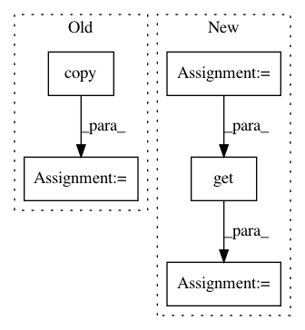

6ffdbc8963b6bcaf686af1a9d5b7ddf212dbfc31,tslearn/early_classification.py,NonMyopicEarlyClassification,fit,#NonMyopicEarlyClassification#Any#Any#,74
Before Change
y_classes = np.unique(y)
self.labels_ = sorted(set(y_classes))
y_classes_indices = [self.labels_.index(yi) for yi in y_classes]
y_ = np.copy(y)
for idx, current_class in enumerate(y_classes):
y_[y_ == current_class] = y_classes_indices[idx]
self.cluster_ = TimeSeriesKMeans(n_clusters=self.n_clusters,
After Change
X1, X2, c_k1, c_k2, y1, y2 = train_test_split(X, c_k, y, test_size=0.5)
label_to_ind = {lab: ind for ind, lab in enumerate(label_set)}
y_ = np.array([label_to_ind.get(lab, self.__n_classes_ + 1)
for lab in y])
vector_of_ones = np.ones((X.shape[0], ))
self.pyck_ = coo_matrix(
(vector_of_ones, (y_, c_k)),
In pattern: SUPERPATTERN
Frequency: 3
Non-data size: 5
Instances
Project Name: rtavenar/tslearn
Commit Name: 6ffdbc8963b6bcaf686af1a9d5b7ddf212dbfc31
Time: 2020-04-21
Author: romain.tavenard@univ-rennes2.fr
File Name: tslearn/early_classification.py
Class Name: NonMyopicEarlyClassification
Method Name: fit
Project Name: okfn-brasil/serenata-de-amor
Commit Name: 333d69671c35b4566d6ec8a344a35507e49face9
Time: 2017-05-24
Author: jessicatemporal@gmail.com
File Name: develop/2017-05-19-jtemporal-cities-population-study.py
Class Name:
Method Name:
Project Name: Scitator/catalyst
Commit Name: 535ca090eb4d780169494c1c17eaaba8005bcecc
Time: 2019-04-14
Author: scitator@gmail.com
File Name: catalyst/rl/offpolicy/exploration/exploration.py
Class Name: ExplorationHandler
Method Name: __init__